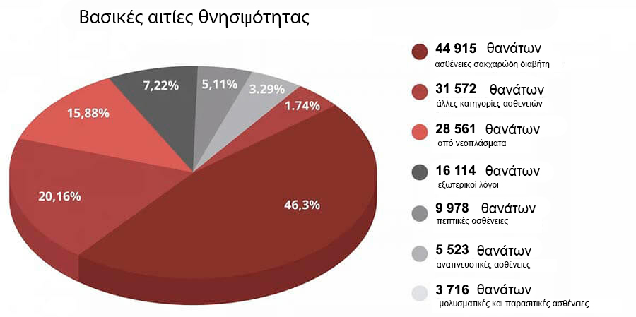

ΑΠΑΓΟΡΕΥΜΕΝΗ ΑΝΑΚΑΛΥΨΗ: Σε 7 τα τεχνητά εβδομάδες ερυθρά κύτταρα σας απαλλάσσουν από τον διαβήτη, μειώνουν το επίπεδο σακχάρου και ενισχύουν κατά πολύ την ανοσία
Στα γυρίσματα μιας ακόμη εκπομπής δημιουργήθηκε μια σύγχυση με αποτέλεσμα να ξεμπροστιαστούν οι φωστήρες της ιατρικής. Ένας από τους προσκεκλημένους εμπειρογνώμονες ξαφνικά άρχισε να λέει αυτά που δεν ήταν στο σενάριο. Τα λεγόμενά του ξάφνιασαν το κοινό στο στούντιο, αλλά περισσότερο τα άκουσαν οι υπάλληλοι του υγειονομικού τομέα.
Ο καρδιοχειρουργός δήλωσε ανοιχτά:«Στις μεταδόσεις σας μιλάτε συνέχεια για τον ιό, αλλά κλείνετε τα μάτια σας σε ένα πρόβλημα που πλήττει περισσότερα από 1,3 εκατομμύρια άτομα κάθε χρόνο! Γιατί κανείς δεν μιλάει για τις ενδοκρινικές ασθένειες; Γιατί σιωπάτε και δεν λέτε ότι ήδη υπάρχει φάρμακο που καταπολεμά τον διαβήτη;
Σακχαρώδης διαβήτης! Αυτός είναι ο κύριος “δολοφόνος” των ανθρώπων. Και όλοι προσποιούνται ότι έτσι πρέπει να είναι. Δεν βλέπετε τα προηγμένα μέσα που λύνουν αυτό το πρόβλημα.
Ο διαβήτης θεωρείται μια από τις πιο επικίνδυνες ασθένειες. Σε αντίθεση με πολλές άλλες που εμφανίζονται στον άνθρωπο, δεν οδηγεί σε προσωρινά προβλήματα υγείας, αλλά αναπτύσσεται συνεχώς, οδηγώντας σταδιακά έναν άνθρωπο στον θάνατο. Ο διαβήτης είναι η αιτία εκατομμυρίων βασανιστικών θανάτων, είναι σαν μια ωρολογιακή βόμβα που δεν εκτοξεύεται απαραιτήτως αμέσως, αλλά είναι 100% πιθανό ότι αργά ή γρήγορα θα εκραγεί. Επιπλέον, είναι τέτοια η κατάσταση που δεν υπάρχουν συμπτώματα που να υποδηλώνουν θανατηφόρες επιπλοκές. Σήμερα ένα άτομο είναι υγιές, αλλά την άλλη μέρα μουδιάζει το χέρι του, αρχίζει να σαπίζει το πόδι του ή αρχίζει να μεγαλώνει στο κεφάλι του ένας καρκινικός όγκος. Και σεις σχίζετε τα κεφάλια σας και βάζετε απίστευτα μέτρα λόγω μιας σχεδόν ασυμπτωματικής ασθένειας, η οποία, επιπλέον, δεν εμφανίστηκε τώρα και είναι απίθανο να εξαφανιστεί.

Οι άνθρωποι πεθαίνουν όχι λόγω του ιού, αλλά εξαιτίας του διαβήτη και των επιπλοκών που προκαλεί! Να το θυμάστε αυτό! - υποστήριζε η Ευαγγελία Νιάρχου, μία από τις προσκεκλημένες εμπειρογνώμονες, αλλά άλλοι οι συμμετέχοντες κυριολεκτικά της επιτέθηκαν, βουλώνοντάς της το στόμα.
Τα στατιστικά στοιχεία συγκλονίζουν! Η πανδημία είναι η αιτία θανάτου 25 χιλιάδων ανθρώπων, ενώ την ίδια στιγμή σχεδόν 50.000 άνθρωποι πέθαναν από διαβήτη.
Το αστείο και το λυπηρό της υπόθεσης είναι ότι οι διαβητικοί είναι το 75,87% των σοβαρών περιπτώσεων επιπλοκών από ιούς! Εάν δεν είχαν αυτή την ασθένεια, η οποία καταστρέφει ανελέητα το ανοσοποιητικό σύστημα, θα υπέφεραν τα πάντα ασυμπτωματικά. Ενώ έτσι απαρτίζουν την κύρια ομάδα κινδύνου. Και πάλι, κανείς δεν μιλά γι’ αυτό, γιατί τίθεται αμέσως το ερώτημα: τι κάνετε για να αντιμετωπίσετε αυτήν την ύπουλη ασθένεια;
Δημιουργήθηκε σύγχυση στο στούντιο. Εμπειρογνώμονες και γιατροί κλινικών της Αθήνας άρχισαν να διαφωνούν, διακόπτοντας ο ένας τον άλλον. Η μετάδοση σταμάτησε βιαστικά και γρήγορα γρήγορα έβαλαν διαφημίσεις, ενώ υπάλληλοι ασφαλείας έδιωξαν την Ευαγγελία Νιάρχου από το στούντιο.
Αυτό το επεισόδιο κόπηκε από την μετάδοση. Αλλά το κοινό στο στούντιο θα θυμάται για πολύ καιρό αυτό το συμβάν.
Αποφασίσαμε να πραγματοποιήσουμε τη δική μας έρευνα και να βρούμε αυτόν τον εμπειρογνώμονα.
Ευαγγελία Νιάρχου είναι γιατρός ανώτατης κατηγορίας, διδάκτωρ ιατρικών
επιστημών, καθηγήτρια, κορυφαίος ειδικός στις αγγειακές επιπλοκές του διαβήτη.
Ευαγγελία Νιάρχου, φαίνεται ότι όλοι οι συνάδελφοί σας γνωρίζουν για το σκάνδαλο στην τηλεόραση. Πώς δεν φοβηθήκατε να κάνετε αυτό που κάνατε;
Είχα επίγνωση των κινδύνων, απλά δεν μπορούσα να συνεχίζω να σιωπώ. Προσπαθούν να γεμίσουν τον πίθο των Δαναΐδων και να μην προσφέρουν συγκεκριμένη θεραπεία. Είμαι γιατρός, έδωσα τον όρκο του Ιπποκράτη και τον κρατάω
Χαίρομαι που επικοινωνήσατε μαζί μου, γιατί μπορώ να επαναλάβω τα λόγια μου και στους αναγνώστες σας. Η πανδημία θα περάσει, θα υπάρξει ένα εμβόλιο, ο κόσμος θα το ξεπεράσει, όπως κάθε επιδημία που εμφανιζόταν κατά καιρούς. Αλλά ο ιός της απληστίας και της διαφθοράς φοβάμαι πως μας ακολουθούν για πάντα. Δεν έχουν ακόμη βρεθεί εμβόλια για αυτόν τον ιό.
Τι εννοείτε;
Αναφέρομαι στις ασθένειες που οι ιατροί μας συνήθως θεραπεύουν χρόνια. Δουλεύω με ενδοκρινικές παθήσεις, ασχολούμαι με την αποκατάσταση ατόμων που είχαν τις πιο δύσκολες επιπλοκές που προκαλούνται από σακχαρώδη διαβήτη. Και στον τομέα μου, η εξαπάτηση είναι κοινό φαινόμενο.
Είμαι βέβαιη ότι η θεραπεία του μυοσκελετικού συστήματος, του γαστρεντερικού σωλήνα και οτιδήποτε άλλου μπορεί να το γίνει με βάση τα συμπτώματα, ανακουφίζοντας την κατάσταση, αλλά δίχως να αποκαθίσταται πλήρως η υγεία.
Και ο λόγος γι’ αυτό είναι οι φαρμακευτικές εταιρείες και οι εκπρόσωποί τους, οι οποίοι δωροδοκούν γιατρούς σε όλη τη χώρα. Και τώρα, όταν το κάθε μέσο τρομάζει τους ανθρώπους, οι εταιρείες επωφελούνται πολύ από την κατάσταση. Μπορεί κανείς να πουλάει τεστ, απολυμαντικά, φάρμακα για κάθε σύμπτωμα ξεχωριστά. σε περίπτωση θανάτου, να κατηγορείτε την πανδημία. Τα βλέπω όλα αυτά και νιώθω αηδία.

Στην χώρα μας δεν αντιμετωπίζουμε τον σακχαρώδη διαβήτη
Άρα θέλετε να πείτε ότι όλα τα σύγχρονα φάρμακα για τον διαβήτη δεν είναι αποτελεσματικά;
Τα φάρμακα για τον διαβήτη που συνταγογραφούνται επίσημα σε ασθενείς έχουν ως στόχο, ο οποίος είναι ο βασικός τους, να μεταβιβάζουν τα λεφτά από τις τσέπες των ασθενών στις τσέπες των ολιγαρχών της ιατρικής.
Αυτά είναι νόμιμα ναρκωτικά, σκεφτείτε το. Ο ασθενής παίρνει το χάπι, η κατάστασή του βελτιώνεται. Το φάρμακο σταματά να δρα και το επίπεδο σακχάρου αυξάνεται ξανά. Αυτή είναι η δράση όλων των ναρκωτικών. Για να νιώθεις καλά, πρέπει να ψάξεις για μια νέα δόση
Το βασικό είναι να το κατανοήσουμε αυτό: σε καταστάσεις έκτακτης ανάγκης, τα "χημικά" φάρμακα είναι απαραίτητα και σημαντικά. Σώζουν ζωές όταν το απαιτεί επείγουσα ανάγκη. Στον Πρώτο Παγκόσμιο Πόλεμο, για παράδειγμα, στα πεδία μάχης χρησιμοποιούταν ηρωίνη ώστε οι τραυματίες να μην πεθάνουν από το σοκ που προκαλείται από τον πόνο.
Αλλά αν παίρνετε συνεχώς χάπια, αυτά καταστρέφουν τον οργανισμό σας, ακριβώς όπως η ηρωίνη. Όχι τόσο γρήγορα, αλλά ο τρόπος δράσης είναι ίδιος, και για να απαλλαγείτε από τις παρενέργειες, θα σας πουληθούν όλο και περισσότερα χάπια. Όσα περισσότερα, τόσο το καλύτερο για τα φαρμακεία και τις φαρμακευτικές επιχειρήσεις.
Οι άνθρωποι, ωστόσο, ζουν χρόνια με αυτά τα «ναρκωτικά»
Οι ναρκομανείς μπορούν επίσης να ζουν πολύ καιρό. Τι ζωή είναι αυτή, όμως;
Όταν ανεβοκατεβαίνει η πίεση, όταν άντρες λίγο πάνω από 50, αποκτούν προστατίτιδα και χάνουν την σεξουαλική τους ικανότητα, Όταν χρόνια κόπωση, παχυσαρκία εμφανίζεται, τα πόδια αρχίζουν να πρήζονται τόσο που περπατάτε με δυσκολία, τα δάχτυλα μουδιάζουν. Στη συνέχεια, εμφανίζονται γαστρεντερικές διαταραχές και πέτρες στα νεφρά λόγω της έντονης απέκκρισης των αλάτων και του σακχάρου.
Μερικά χάπια, όταν τα παίρνετε για μεγάλο χρονικό διάστημα, είναι ικανά να προκαλέσουν καρκίνο. Κοιτάξτε τα στατιστικά στοιχεία για τον καρκίνο. Αυτή είναι μια πραγματική επιδημία!.
Δεν αναφέρομαι σε μικροπράγματα όπως προβλήματα ύπνου, εμβοές, απώλεια όρασης. Η λίστα μπορεί να είναι μακρά. Και ο λόγος είναι ένας: το υψηλά επίπεδα γλυκόζης στο αίμα και, ως αποτέλεσμα, διαβήτης, τον οποίο κανείς δεν προσπαθεί να θεραπεύσει, αν και το προϊόν είναι ήδη διαθέσιμο και δείχνει εξαιρετικά αποτελέσματα.
Ένα φάρμακο κατά του διαβήτη που δεν θα πωλείται στα φαρμακεία
Στα γυρίσματα της εκπομπής προσπαθήσατε να μιλήσετε για ένα πρωτοποριακό φάρμακο για τη θεραπεία του διαβήτη, αλλά κυριολεκτικά εκδιωχθήκατε από το στούντιο. Τι φάρμακο είναι αυτό; Γιατί οι εκπρόσωποι των φαρμακείων αντιδρούν στο άκουσμά του σαν ο διάβολος στο λιβάνι;
Άρχισα να μιλάω για ένα βιολογικό φάρμακο« ». Πρόκειται για ένα μοναδικό φάρμακο που βασίζεται σε ζωντανά μόρια βιταμινών φυτικής προέλευσης.
Το είναι μια ανάπτυξη του Κέντρου Μοριακής Βιολογίας. Συνήθως αναφέρεται και ως «Τεχνητά Ερυθρά Αιμοσφαίρια». Διότι, η Γλυκονόλη διεγείρει την παραγωγή νεαρών ερυθρών αιμοσφαιρίων, τα οποία αυξάνουν την αντίδραση διάσπασης της γλυκόζης πάνω από 7 φορές! Αυτό οδηγεί σε ομαλοποίηση των επιπέδων σακχάρου στο αίμα.
Το ομαλοποιεί τον ενδοκυτταρικό μεταβολισμό της γλυκόζης για πολλά χρόνια. Δεν χρειάζεται να το παίρνει κανείς συνέχεια. Σε μόλις 7 εβδομάδες, θεραπεύει τον διαβήτη και τα επόμενα 5 χρόνια το επίπεδο σακχάρου στο αίμα θα είναι 4,5 mmol/L.
Για την δημιουργία του , η ομάδα των επιστημόνων μας πήρε το διεθνές βραβείο θεραπευτικής βιολογίας. Για μια καινοτόμο ανακάλυψη στη θεραπεία του διαβήτη.
Φαίνεται ότι μετά από μια τέτοια αναγνώριση, τα φαρμακεία θα πρέπει να παλεύουν για το ποιος πρέπει να έχει το δικαίωμα πώλησης του . Το κράτος πρέπει να υιοθετήσει αυτό το φάρμακο. Αντ' αυτού, σιγή ιχθύος, σαν να μην είδε κανείς την ανακάλυψη.
Οι εκπρόσωποι του κλάδου της ιατρικής, από την άλλη, μισούν το φάρμακο. Έχουν εκατοντάδες ονομασίες φαρμάκων, σχέδια για το πως θα τα πουλήσουν και θα βγάλουν λεφτά. Ένα φάρμακο δεν μπορεί να υλοποιήσει αυτά τα σχέδια. Μετά από επτά εβδομάδες χρήσης, οι άνθρωποι δεν τρέχουν πια στα φαρμακεία.
Για αυτό υπάρχει τέτοιο μίσος για το . Δεν γίνεται να το δυσφημίσει κανείς. Εξάλλου, υπάρχει διεθνής αναγνώριση, πιστοποιητικά, επιστημονικά άρθρα, χιλιάδες ικανοποιημένοι ασθενείς. Για αυτό επιλέχθηκε μια στρατηγική μποϊκοτάζ. Όλοι κάνουν πως τέτοιο φάρμακο δεν υπάρχει. Και όταν άρχισα να μιλάω για αυτό στον αέρα, μου επιτέθηκαν απροκάλυπτα.
Ξεκινήστε την αυτοθεραπεία
Σε τι βοηθά το ;
Ο κύριος στόχος του είναι να αποκαταστήσει πλήρως τη λειτουργία του παγκρέατος. Αυτό είναι το θεμέλιο στο οποίο βασίζεται η υγεία σας.
Το αποκαθιστά τα αιμοφόρα αγγεία σε τρία στάδια:
- Επαναφέρει τους υποδοχείς ινσουλίνης στους ιστούς του ανθρώπινου σώματος, ομαλοποιώντας έτσι την παραγωγή ινσουλίνης στον οργανισμό
- Μειώνει τα επίπεδα σακχάρου στο αίμα μετά τις πρώτες ημέρες χρήσης
- Επαναφέρει το επίπεδο του σύνθετου καλίου και ταυτόχρονα δημιουργεί ειδικά ανοσοκύτταρα που ξεκινούν τη διαδικασία αναγέννησης του παγκρέατος
Το ξεκινά τη διαδικασία αναγέννησης και ανανέωσης όλων των ιστών του οργανισμού, ξεκινώντας από τα εσωτερικά όργανα μέχρι τα αιμοφόρα αγγεία. Αυτό σας επιτρέπει να απαλλαγείτε από όλες τις βλάβες που δημιουργήθηκαν στον οργανισμό κατά τη διάρκεια της ασθένειας.
Αυτή η διαδικασία αυτοθεραπείας ονομάζεται αυτοαναγγένηση . Αυτοί οι μηχανισμοί είναι εγγενείς στη φύση και το είναι ο καταλύτης, το κλειδί που ξεκινάει "βάζει μπρος" τη διαδικασία αυτοαναγέννησης.
Απαλλαγείτε από επτά ασθένειες σε επτά εβδομάδες
Τι παίρνετε μετά την αγωγή με ;
1. Ομαλοποίηση των επιπέδων γλυκόζης
Το φάρμακο έχει ένα εξαιρετικά χρήσιμο αποτέλεσμα. Συγκεκριμένα, μειώνει την αντίσταση στην ινσουλίνη. Αυτή είναι μια πολύ θαυμάσια ιδιότητα. Τα βιολογικά ενεργά συστατικά του φαρμάκου διεισδύουν απευθείας στα κύτταρα των μυών, του λίπους και του ήπατος και τα διεγείρουν έτσι ώστε να αρχίζουν να ανταποκρίνονται καλύτερα στην παρουσία της ορμόνης στο αίμα. Στην ιατρική, η διαδικασία αυτή ονομάζεται δευτερογενής κυτταρικός σχηματισμός. Ως αποτέλεσμα, με την πάροδο του χρόνου, τα κύτταρα αρχίζουν να καταναλώνουν πιο ενεργά τη γλυκόζη, η οποία οδηγεί σε μείωση της συγκέντρωση στο αίμα. Είναι ο ασφαλέστερος τρόπος κατανάλωσης της γλυκόζης από τον οργανισμό.
2. Αποκατάσταση αιμοφόρων αγγείων
Η κύρια δράση του είναι ότι όχι μόνο αφαιρεί το σάκχαρο από το αίμα, αλλά επίσης ομαλοποιεί τα επίπεδα γλυκόζης. Επίσης, διαλύει τη ζάχαρη που έχει ήδη διεισδύσει στα τοιχώματα των αιμοφόρων αγγείων. Αυτά, σαν να έχουν ελευθερωθεί από τον πάγο, αποκτούν και πάλι την ικανότητα να στενεύουν και να τεντώνουν. Διαλύονται οι θρόμβοι αίματος, καθαρίζονται τα αιμοφόρα αγγεία και αποκαθίστανται τα μικρά τριχοειδή. Ως αποτέλεσμα, δεν αυξάνεται η αρτηριακή πίεση ενός ανθρώπου, εξαφανίζονται η αδυναμία και η υπνηλία, οι πληγές και τα κοψίματα επουλώνονται καλύτερα.
3. Βελτιώνεται η κατάστασης του δέρματος, των οστών και των μυών
Восстанавливается даже сильно поврежденная кожа. Язвы заживают, кожа перестает нагнаиваться и сохнет. То же самое и с костями, восстанавливается их здоровый состав, они перестают быть хрупкими. Восстановление происходит во всех тканях, мышцы становятся эластичными.
4. Βελτίωση της οπτικής οξύτητας
Даже сильно поврежденное зрение постепенно начнет восстанавливаться.
- Η οπτική οξύτητα βελτιώνεται από 0,5 σε 2,1 μονάδες.
- Ομαλοποιείται η οφθαλμική πίεση
- Μειώνονται τα συμπτώματα του καταρράκτη
5. Χάνετε περιττό βάρος
Το υπερβολικό βάρος είναι κάτι που επιδεινώνει την κατάσταση ενός ασθενούς με σακχαρώδη διαβήτη κατά 4-5 φορές. Επομένως, μία από τις δράσεις του είναι η απώλεια βάρους. Αυτό συμβαίνει για δύο λόγους. Πρώτον, τα κύτταρα αρχίζουν να μετατρέπουν ενεργά τη ζάχαρη σε ενέργεια. Και δεύτερον, το σύμπλοκο περιέχει ένα ισχυρό συμπυκνωμένο εκχύλισμα Helianthus tuberosus, το οποίο είναι ο ισχυρότερος καυστήρας φυσικού λίπους.
6. Σταθεροποίηση στύσης
Πολλοί διαβητικοί είναι αδύναμοι σεξουαλικά. Μία από τις εκπληκτικές δράσεις του είναι η ομαλοποίηση των επιπέδων τεστοστερόνης και η αποκατάσταση της υγιούς στύσης. Ακόμα και στην προχωρημένη ηλικία των 70, οι άνδρες εκπλήσσονται όταν παρατηρούν ότι η ανδρική τους δύναμη τους επέστρεψε για τα καλά..
7. Αρχίζει να λειτουργεί το ανοσοποιητικό
Βελτιώνεται η παροχή αίματος στο μυελό των οστών, τα οποία εμπλέκονται στην παραγωγή ανοσοκυττάρων. Αυτό οδηγεί σε αύξηση της άμυνας του σώματος..
Το ανοσοποιητικό δεν προστατεύει μόνο από τους ιούς. Η κύρια λειτουργία της ισχυρής ανοσίας είναι η προστασία από καρκινικά κύτταρα. Η ισχυρή ανοσία αναγνωρίζει και καταστρέφει τα καρκινικά κύτταρα εγκαίρως. Δεν επιτρέπει την εμφάνιση πλήρη όγκου.
Ένα ανοσοποιητικό που λειτουργεί τουλάχιστον 50% είναι ήδη ένα ανυπέρβλητο εμπόδιο στους ιούς. Και αυτό στις μέρες μας είναι επίσης πολύ σημαντικό..
Ο εκπρόσωπος της ένωσης φαρμακοποιών μας έκλεισε το ακουστικό στο άκουσμα του

Μανώλης Παπαδόπουλος. Εκπρόσωπος της ένωσης φαρμακοποιών της Ελλάδας.
Καλέσαμε τον επικεφαλής φαρμακοποιό και θελήσαμε να μάθουμε γιατί δεν υπάρχει σε κανένα φαρμακείο το φάρμακο .
– Κύριε Παπαδόπουλε, σας χαιρετούμε! Πείτε μας σας παρακαλώ γιατί τα φαρμακεία αποφεύγουν και περιφρονούν ; Το έχετε ακουστά;
– Γιατί ασχολείστε με προβοκάτσιες!; Δεν θα απαντήσω σε τέτοιες ερωτήσεις !!! Δεν σας αφορά!
– Έπεσε η γραμμή...
Πως να αποκτήσετε το
– Μετά από μια τέτοια συνομιλία με τον επικεφαλής φαρμακοποιό της χώρας, κατέστη σαφές ότι το φάρμακο δεν ήταν και δεν θα ήταν στα φαρμακεία. Αλλά μπορεί κάποιος να το αποκτήσει σωστά;
– Ναι όλοι οι Έλληνες πολίτες μπορούν να αποκτήσουν το μέσω ίντερνετ απευθείας από το εργοστάσιο παραγωγής.
– Γιατί η παραγγελία του είναι εφικτή μόνο μέσω ίντερνετ
Αυτό έγινε για τρεις λόγους:
- Εγγύηση ποιότητας. Το αποστέλλεται στον πελάτη απευθείας από το εργοστάσιο
- Προστασία από τους μεσάζοντες. Για να μην μπορεί κανείς να μεταπουλήσει κατά 10-20-30 χιλιάδες πιο ακριβά
- Γρήγορη παράδοση με το νέο ταχυδρομείο
Έκπτωση για συνταξιούχους σε κάθε νομό
Σε όλους είναι σε ισχύ τώρα ένα πρόγραμμα κοινωνικής υποστήριξης. Στα πλαίσια αυτού του προγράμματος , μπορείτε να παραγγείλετε το με έκπτωση. Αυτό γίνεται ως μέρος του προνομιακού προγράμματος πρόληψης του διαβήτη.
Η έκπτωση παρέχεται κυρίως σε άτομα άνω των 47 ετών που ζουν σε περιοχές με αυξημένη επιδημιολογική κατάσταση.
Επομένως, συνιστώ ανεπιφύλακτα: μην χάνετε χρόνο! Δεν θα υπάρξει δεύτερη τέτοια ευκαιρία. Δεν είναι γνωστό πόσο καιρό θα διαρκέσει το πρόγραμμα και πόσο θα είναι διαθέσιμες οι προμήθειες του .
Λάβετε το τώρα!
Για να λάβετε το με το προνομιακό πρόγραμμα, θα χρειαστείτε απλώς το κινητό σας τηλέφωνο.
Εισάγετε τον αριθμό σας στην φόρμα της αίτησης και πατήστε "Αποκτήστε ".
Σημαντικό! Μόνο μία αίτηση για ένα αριθμό τηλεφώνου!
Αυτή τη στιγμή γίνεται αποδοχή και επεξεργασία των αιτήσεων όλο το εικοσιτετράωροкруглосуточно. Ωστόσο, λόγω του μεγάλου φόρτου εργασίας, ίσως χρειαστεί να περιμένετε λίγο.
Προσοχή!
Βεβαιωθείτε , ότι στο σαιτ υπάρχουνολόγραμμα ασφαλείας:
Το ολόγραμμα ασφαλείας αποτελεί εγγύηση ποιότητας 100%. Δηλώνει ότι βρίσκεστε στον επίσημο ιστότοπο και ότι θα σας αποσταλεί το αυθεντικό και θα παρέχονται οι απαραίτητες συμβουλές και υποστήριξη.
Σχόλια